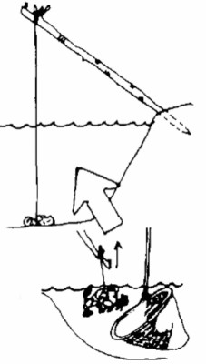

Что такое речные раки

Обычные речные раки относятся к простым ракообразным отрядам. Последние пары имеющихся конечностей заканчиваются уникальными клешнями, благодаря которым ракам свойственно с особой ловкостью схватывать понравившуюся добычу. Делают раки это очень быстрыми темпами. Остальные четыре пары конечностей являются средством для интенсивного передвижения. Хвостовой панцирь содержит в себе многочисленные атрофированные конечности. Пол молодого рака устанавливается благодаря обнаружению небольшого полового органа. Пол взрослого рака определить гораздо легче, ведь клешни у них наиболее большие, мощные и широкие, а у самок все идет с точностью, да наоборот. Благодаря хвосту самки происходит сильная защита икры. Часть полового отверстия у самок находится в начале третьей пары конечностей, а у самцов возле пятой пары конечностей. Если вы хотите заниматься ловлей раков, то должны знать об их жизни все в подробных рассказах, которые будут приведены ниже.
Что необходимо знать о среде обитания и образе жизни?
Рак весьма прихотлив по отношению к окружающему миру, нежели об этом думают остальные, в том числе специалисты. Просто изучением данных вопросов мало кто занимается, в отличие от других наук, но все же некоторая информация об этих фактах есть. Водная среда, где ракам свойственно находиться, должна быть обязательно пресного типа, и ни о чем другом не может идти и речи, так как в слишком соленой воде они не смогут воспроизводить себе подобных на свет. Количество кислорода ракам нужно такое же, как и лососевой рыбе, то есть достаточно большое. Нужно же ракам дышать! Для стабильной жизнедеятельности раков в теплые времена года в воде должно содержаться большое количество кислорода. Раки спокойно могут жить и в темной, и в светлой воде, главное, чтобы был большой уровень кислотности. Рост раков в воде без извести значительно замедляется. Раки очень чувствительные к различным загрязнениям. В грязной, неочищенной воде вы никогда не увидите раков, они очень себя любят . В загрязненном водном пространстве раки могут погибнуть. Если имеется благоприятное условие для жизни и комфорта , то раки могут поселиться в озере, старице, реке, ручье и водоеме. Но чаще всего они поселяются именно в реках. Почему именно в реках, видно только им. Идеальная величина рН для всех раков равна семи.
В месте обитания рака дно водоема непременно должно быть не только твердым, но и не содержать никакого ила. На дне с большим количеством ила раки не будут обнаружены, так как в таких местах у них не получается раскопать себе убежище, там они просто ничего не видят из-за темноты. Раки любят дно из камня, так как там они с легкостью выкапывают себе норы. Норки раков вы можете встретить в прибережной яме или в откосе берега. Зачастую они располагаются на границах как твердого, так и мягкого дна. Выход из рачьей норки, который выходит за один метр, обычно прячется под стволами упавших деревьев, или же под многочисленными ветками или камнями. Норы раков являются весьма тесными, вырытые под размер владельца, что заметно облегчает безопасность раков в целях защиты от более крупных морских обитателей. А вот за свою жизнь раки переживают больше всего, поэтому очень проблематично пробраться в их норку чужим обитателям, раки это просто ненавидят. Как это так, что кто-то еще будет пробираться на их личную территорию? В принципе, это обычные природные инстинкты, которых не избежать. Если природа так заложила, значит так действительно нужно для поддержания нормальной жизнедеятельности. Рака проблематично выловить из собственной норы, так как он хорошо держится благодаря своим цепким и многочисленным конечностям. Раки живут на глубине до трех метров. Данная глубина является самой оптимальной. Самыми лучшими местами обитания владеют крупные по размеру самцы. Маленькие раки располагаются около береговых линий, чаще всего под камешками, листиками и веточками. Обитаемость норы можно спокойно определить по свежему грунту у самого входа.
По своему образу жизни раки считаются самыми настоящими отшельниками. Каждый из них имеет свое сугубо личное пространство для эффективного укрытия, которое защитит его от всевозможных противников и сородичей, которых у него очень много. Днем рак находится в укрытиях, при этом закрывая вход с помощью массивных клешней. При чувстве опасности он начинает угрюмо пятиться, уползая в глубокую нору. На поиск добычи рак уходит вечером, а при плохой погоде после обеда. Больше всего передвигается рак в ночное время суток , при этом вытягивая клешни максимально вперед и держа хвост исключительно прямо, но при испуге быстро плывет в обратную сторону с помощью сильного удара хвоста. Выглядит это достаточно смешно, поверьте. Жаль, что современные художники не подумали над тем, чтобы нарисовать такую забавную картину. Специалисты считают, что раки держатся на одном определенном месте, которое им импонирует больше всего. Раки любят постоянность и стабильность. Если они уже выбрали одно определенное место, то не будут переселяться долгое время, пока их будет все устраивать. Но вот меченых раков находят в снастях за несколько сотен метров от того, где их помечали.
{kind=link}
Рост
Темп роста раков зависит в первую очередь от составной части воды и температуры, а также наличия питания. Только при регулярном и ежедневом питании рак будет расти быстрее. Но так происходит не всегда. Первые два года раки растут весьма быстрыми темпами, а далее самцы развиваются значительно быстрее. К трем годам раки достигают шести сантиметров. В семь лет раки достигают положенных для ловли десяти сантиметров. В воде с обильным кормом раки могут вырасти быстрее, но при плохих условиях они отстают в своем развитии. Знайте, что вы можете получить огромный государственный штраф, если выловите маленького рака. Во всех государствах поставлены требования-до десяти сантиметров, что считается вполне естественным, потому что готовить рака меньшего по размеру бессмысленно.
Люди интересуются, до каких размеров обычно дорастают раки. По приведенной статистике двадцатого века в зарубежных странах раки достигали целых семнадцати сантиметров. На одном из соревнований за рубежом мужчина выловил рака длиной в двадцать восемь сантиметров и весом сто семьдесят грамм. Но самой большой оказалась особь женского пола, чему все были поражены, длиной в тридцать сантиметров и весом в двести тридцать грамм. Данная самка была успешно выловлена финнами. За границей масса случаев вылова огромных раков, чем они, собственно говоря, и гордятся. Не все страны могут похвастаться этим положительным фактом. Но, большие раки-это исключительная редкость, к великому сожалению. Наверное, это все происходит из-за массового экологического кризиса, с которыми специалисты безуспешно стараются бороться. Но главное это не только желание экологов, но и современных людей. О чем можно говорить, если многие промышленные предприятия выливают свои многочисленные грязные отходы прямо в реки? И беседы с ними не приводят ни к какому положительному эффекту, в который хочется верить. А именно в реках больше всего любят поселяться раки. Поэтому за этим кроется ряд важных причин, с которыми должно бороться будущее поколение молодежи. Возможно, в будущем государство станет вводить какие-либо санкции.
Но, а какова продолжительность жизни раков? Возраст рака определить очень трудно. Некоторые виды раков достигают двадцатилетнего возраста, но не более. Хотя с массовым выловом в современное время, вряд ли раки доживут до такого преклонного возраста. Но точных методов определения возраста раков специалисты еще разработать не успели. Но сейчас ученые над этим думают, и вероятно, что в скором времени мы узнаем, как это делается. Уже сейчас мы можем наблюдать, что на многих реках ловля категорически запрещена, или является платной. Во многих странах ввели обязательный сертификат, и если вы его покупаете и платите ежемесячную так сказать абонементскую плату, то можете заниматься ловлей.
Линька
Раки растут скачкообразными темпами при смене панциря. Линька является очень важным моментом в жизни раков, так как в этот момент основательно обновляются жизненные органы. Обновляется хитиновый покров, сетчатка глаз, жабры, ротовые придатки и пищеварительные органы. Перед процессом линьки раку свойственно исчезать на пару дней в своей норе. Но сама линька проходит в открытых местах, но только не в норе. Меняется панцирь в течение ближайших десяти минут. Далее рак в беззащитном состоянии прячется на две недели в свои апартаменты. В этот период времени он не хочет есть, спариваться и двигаться. Можно сказать, у них своего рода возникает депрессия, когда хочется побыть в тишине и спокойствии. Возможно, это происходит из-за неполноценности, которую испытывают раки на тот момент. Вероятно, что рак ощущает болевые ощущения. Специалисты пока что не занялись исследованием данного вопроса. Все как у людей. Соль кальция поступает из крови в уже обновленный панцирь и тщательно пропитывает его. Перед процессом линьки она накапливается в больших количествах в твердом образовании, тем самым находясь у раков в организме.
При приготовлении рака вы можете это обнаружить.
Линька происходит обычно в летний сезон. Взрослые раки линяют до двух раз в год, а вот молодые самцы значительно чаще. Самки линяют через каждые два года. Опять же, все зависит от континента. Но можно прийти к выводу, что линька происходит очень часто.
Обычно линька происходит в июне. В разных странах условия протекают по-разному. В холодное время линька может задержаться на месяц.
{kind=link}
Размножение
Раки успешно достигают полового созревания, будучи длиной в шесть сантиметров, а самки при длине восемь сантиметров. В уже упомянутой нами Финляндии раки достигают полового созревания в возрасте четырех лет, а самки в шесть лет.
Как установить половую зрелость рака? Для этого нужно слегка приподнять его твердый панцирь. У самцов можно обнаружить на хвосте небольшие белые завитушки в виде трубочек . Белого цвета они из-за большого количества содержания жидкости, которая и придает этот нейтральный цвет. Под самим панцирем располагаются икринки, чаще всего коричневых и оранжевых оттенков, все зависит от степени развития рака. Половая зрелость самки устанавливается по белой прожилке, которая проходит поперек хвостика. Это слизистая железа, которая выделяет специальное вещество, с помощью которого все икринки успешно прикрепляются к хвосту.
Спариваются раки обычно в осенний период времени. Оплодотворяются они в обычном месте, не ища чего-то определенного. Рак с помощью больших клешней старается повернуть самку на спину, а далее старается прикрепить сперму в виде треугольника. Но самка в этом плане категорична, и не сразу соглашается на моментальное спаривание. Но самец не любит ждать, поэтому прилагает все усилия, чтобы завершить процесс. В течение нескольких дней, не сдвигаясь с места, самка старательно откладывает икринки, при этом лежа строго на спине. Максимально самка может отложить до четырехсот икринок. Икринки в свою очередь не будут отделяться от самки, а останутся в веществе, которая выделяется железой самки.
Под хвостиком самки икра остается до наступления следующего лета. За холодное время многие икринки погибают, так как происходит механическое выпадение и грибковая инфекция. Все зависит от температуры воды, но чаще всего личинки выходят уже в июле. Личинка достигает десяти миллиметров и уже чем-то напоминает основание рака. Но спина у них является более выпуклой и широкой, а хвост и имеющиеся конечности считаются менее развитыми. Личинка держится в течение двух недель под хвостом самки, пока до конца не высосет желток. После истечения этого срока они уходят от матери и ведут отдельную жизнь. Это вызывает удивление, но так природой заложено, что раки не остаются долго с матерью и требуют самостоятельности. А все, потому что раки выдержанные существа и не боятся ответственности и трудностей. В принципе, первое время маленькие раки держаться вместе, так сказать по-братски.
Питание
Рак считается всеядным животным. Ему свойственно питаться разнообразными полезными растениями, донным организмом, сородичами и беззащитными морскими обитателями. Но в основном раки отдают предпочтение растительной пище. Также они любят поедать насекомых, улиток и комаров. Молодые раки очень любят планктонов и не откажутся от водяных блох, комаров-дергунов. Главное, это вовремя поймать пищу, что для молодых раков очень проблематично, а мама на помощь не придет. И вообще, раки очень любят покушать, но это не всегда удается.
Сразу же рак свою добычу не убивает. Он начинает постепенно грызть ее, при этом откусывая все маленькими кусочками, что кажется весьма жестоким. Молодые раки поедают пищу в течение нескольких минут, что довольно-таки быстро. С добычей раки не церемонятся, как другие животные.
Многие думают, что при поедании пищи рак вредит рыбному хозяйству, и при этом эти личности вводят всех в глупое заблуждение. Но ученые доказали, что если запустить раков в реку, то количество рыбы не сократится. Раки не будут трогать даже самую вкусную рыбу. А все заключается в том, что рак просто не в состоянии поймать рыбу. Тут даже клешни не в состоянии помочь. Однако больную или малоподвижную рыбу рак жалеть не станет, в принципе, как и своих сородичей. Раки своего рода тоже хищники, которые никогда не станут жалеть соперников.
Враги раков
Рак имеет множество врагов среди морского населения, но у него есть хорошая оборона-панцирь. Угри, окуни и щуки безжалостно поедают раков. Угри могут пробираться в норы раков, поэтому именно эта рыба является самым опасным врагом раков. Для молодых раков страшен окунь, хотя он сам небольших размеров. Личинок обычно поедает лещ.
Но чаще всего раков губит рачья чума, несмотря на большой список страшных врагов.
{kind=link}
Ловля раков
Известно, что даже в античный период времени раков охотно, с удовольствием ловили. В средние века раков использовали только в качестве лечебной цели. Сожженными раками, а точнее образовавшимся пеплом, который от них остался, обычно посыпали раны от укусов змей или бешеных собак. Употребляли раков в вареном виде только при серьезных проблемах с желудком, что очень странно, ведь при хорошем приготовлении рак имеет несравненный вкус. Не зря во многих ресторанах это блюдо не из самых дешевых, и естественно, что у этой вкусности очень много поклонников по всем странам мира. Поэтому повара даже не сомневаются, что данный вид пищи будет всегда пользоваться широкой популярностью, особенно среди элитных слоев современного общества, которые любят побаловать себя чем-то изысканным. Если ознакомиться с журналами, то можно часто увидеть знаменитостей за поеданием поджаристых раков в дорогом ресторане. А звезды есть что попало просто не станут. Значит можно подытожить, что краб является престижным блюдом.
Из источников истории можно узнать, что впервые раков стали употреблять в Швеции в семнадцатом веке, где местная элита оценила не отменный вкус этой пищи. Естественно, что Финляндия стала подражать королевским семьям и тоже стала часто готовить это блюдо. Крестьяне вылавливали раков и отдавали дворянам, а вот сами не признавали этой пищи, несмотря на ее дороговизну в то время. Хотя это удивляет, ведь при ежедневной ловле раков они могли забрать себе хоть одного и отведать эту диковинку, но что-то у них не было желания. Вероятно, что они просто не разделяли вкусов с местной элитой.
Ловля руками
Ловля раков с помощью рук считается самым банальным и примитивным способом, но этим методом пользовались в далекие древние времена, что отразилось и в наши времена. На данный момент рыболовы зачастую используют этот несложный метод, который работает на практике, как бы странно это не звучало. Ранее ловец осторожно двигался в воде и заглядывал под камешки, веточки деревьев, под которыми ракам свойственно прятаться в дневное время суток. Как только человек заметил рака, он сразу же активными движениями старается схватить его, пока тот не успеет уплыть. Известно, что как только рак понимает, что его могут поймать, то с огромной скоростью может уплыть, и вы даже не заметите, как это скоропостижно произойдет. Данный метод не подойдет рыбакам, которые панически боятся клешней. Было много случаев, когда мужчины обращались за скорой медицинской помощью, потому что раки сильно ранили их, в итоге перевязки было просто не избежать. А сама рана заживала не менее недели. Поэтому аккуратно подходите к этому нелегкому делу, если хотите сохранить свое здоровье в норме. Благоприятнее всего ловить раков вечером, пользуясь ярким фонариком. В древности, чтобы приманить раков, люди разжигали пламенный костер. В таком случае их ловили сотнями. Но сейчас это делать просто. Фонарик можно приобрести в любом городском магазине, при этом заплатив смешную сумму денег.
С помощью рук можно поймать рака, если глубина воды составляет до метра. Опять же, делайте это максимально аккуратно, дабы не повредить руки. При большой глубине ранее применялись деревянные рачьи клещи. С помощью них легко ловить и поднимать рака из воды. Клещи варьируются длиной до трех метров.
{kind=link}
Самым простым приспособлением считается обычная деревянная палка, на конце которой делается специальный расщеп, который можно расширить благодаря использованию маленьких камней и деревянных палочек. Ловить раков клещами довольно-таки проблематично, так как они сразу чувствуют неладное и убегают. В принципе так и не получили широкого распространения и популярности. Потому что рыбакам главное получить хороший результат, а этот метод не позволит получить желаемого. Но не стоит отчаиваться, потому что существует огромное количество альтернатив.
Известны виды подводной ловли.
Для нее необходимо наличие специальных очков и трубочки для того, чтобы дышать. Из норы рака можно вытащить руками, при этом надев перчатки или просто собирать со дна. Если вы ныряете ночью, то не забудьте иметь при себе фонарик, чтобы освещать водное пространство. За ходом ловли попросите понаблюдать товарища. Ведь всякое бывает в нашей жизни, поэтому лучше подстраховаться в целях своей же безопасности. Чуть что, напарник сразу же придет к вам на помощь и спасет от беды. Бывали разные случаи. Бывало, что в воде человеку резко становилось плохо, поэтому убедитесь, что по медицинским показателям вам можно нырять. Чаще всего это строго запрещено людям с сердечными заболеваниями, поэтому лучше всего проконсультироваться высококвалифицированным специалистом, который подробно расскажет вам о ваших недугах. Нужно бережно относиться к своему здоровью, тогда и жить будет лучше. А если вам нельзя нырять-не беда. Обычную ловлю раков никто не отменял, это не менее интересно. В далекие времена и не было другого понятия, кроме обычной традиционной ловли.
Мы рассматривали способы ловли, в которых не используется приманка. Но без приманки никто вам не даст гарантии, что вы поймаете рака. При применении приманки вы добьетесь эффективного результата. Приманка делается достаточно легко, главное иметь на это желание.
Ужение раков

{kind=link}
К двухметровой палке привязывается леска, а сама леска к приманке. Часть заостренного конца втыкают в воду. Приманка кладется в нужное место.
Ловец может использовать столько удочек, сколько душа пожелает. Снасти располагайте вдали друг от друга.
В течение нескольких раз обязательно проверяйте удочки. Если улов плохой, то переходите в совершенно другое место. Обычно за раз можно поймать до десяти раков.
Рачевни
{kind=link}
На данный момент широко используется рачевня. Не слышали о таком? Сейчас мы постараемся объяснить. Она представляет собой цилиндрическую сеточку, на которую натянут металл в виде обруча. Обруч изготавливается из обычной проволоки. Ранее ее делали из прутика ивы, а далее подвязывали обычный камень, железо или мешок с песком. Диаметр обруча достигал до пятидесяти сантиметров. К обручу привязывали тонкие шнуры одинакового размера, а далее соединяли их общим узелком. Вы можете поставить несколько рачевней, главное соблюдать определенное расстояние. Приблизительное расстояние должно быть пять метров, иначе ловля окажется неудачной.
Как и где ловить раков
Чтобы рачный улов был стабильным, необходимо знать, как и где их правильно ловить. Двигаются раки в зависимости от освещения водного пространства. Лучше всего ловить раков вечернее время. В прозрачной воде раки ловятся намного хуже.
На состояние активности раков влияют многие факторы. Можно заниматься ловлей даже тогда, когда идет небольшой дождь. Не ловите раков при громе.
Ловушка должна достигать трех метров. В осветленной воде раки находятся глубже обычного. Благоприятнее всего осуществлять ловлю на каменистом дне. Собирайте раков в емкость, у которой имеется широкое дно. На донышке посуды не должно быть никакой воды.
Длина раков обычно измеряется мерными палочками. Длина палочки достигает десяти сантиметров.
Выловленного рака перед употреблением какое-то время необходимо хранить. В целях профилактики от инфекционных заболеваний храните раков в водоеме, где вы их ловили. Хранить раков рекомендуется в течение двух дней, и, конечно же, не забывайте их кормить, дабы они не съели друг друга, что случается довольно-таки часто. Когда раки сильно голодны, то их не волнуют жизненные аспекты, поэтому неудивительно, если они съедят друг друга за короткий промежуток времени, а вы в итоге останетесь без лакомства. Кормите их свежей рыбой, которую они просто обожают. Также отлично подойдет крапива, ольха, картофель, горох и иная растительная пища.
Кладут раков в большие просторные ящики. Может понадобиться плетеная корзина, а также деревянный, картонный или пластмассовый ящик, главное, чтобы присутствовало отверстие для поступления воздуха.
В ящик до двадцати сантиметров раки укладываются в один ровный ряд. Сверху положите мох, траву, крапиву, водные растения. Раки не должны плотным образом прилегать друг к другу. Температура в ящике должна быть оптимальной. Можно подложить немного льда. До применения раки должны полностью высохнуть, это является обязательным условием, если вы не хотите получить серьезное пищевое отравление.
Теперь вы знаете, как правильно ловить и хранить раков. В нашей статье мы старались максимально подробно рассказать о жизнедеятельности раков, об их любимой пище, размножении и местоположении. Мы надеемся, что вам было интересно и познавательно.
Источник : http://fihingclub.ru/raki-i-lovlya-rakov/